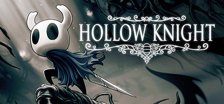
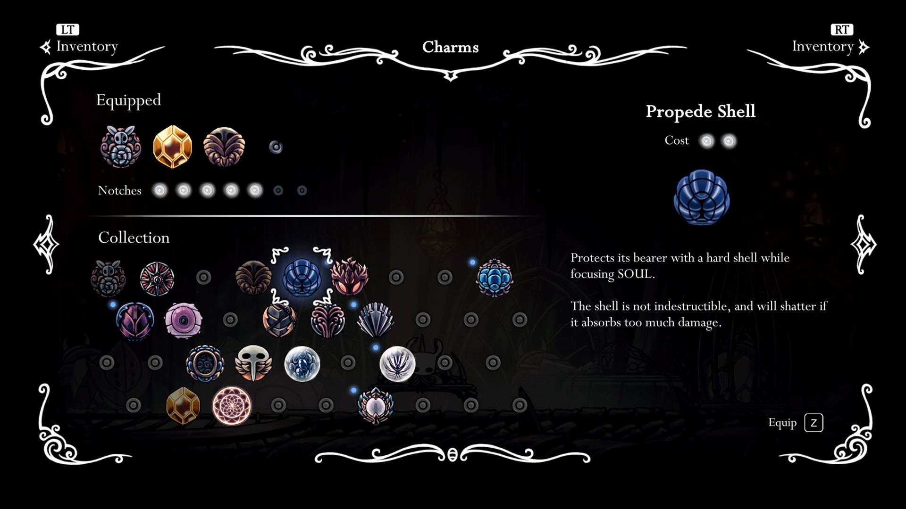
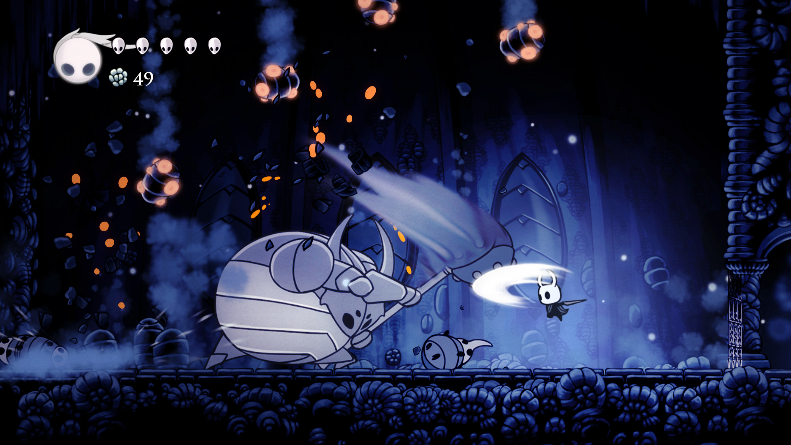
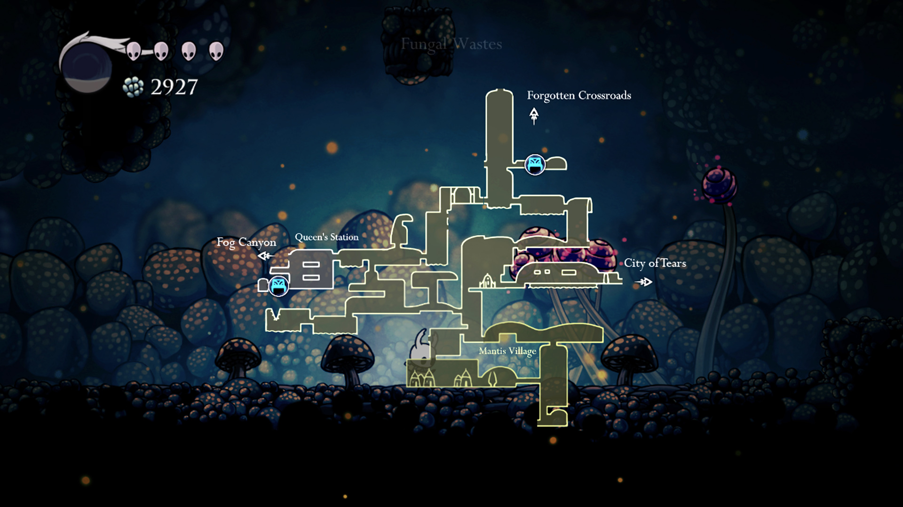
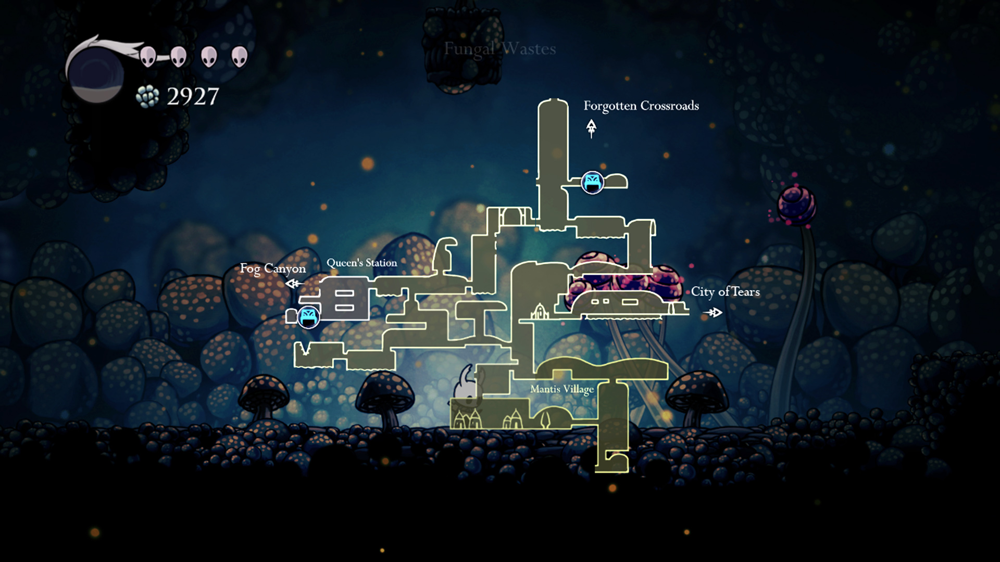

Publishing Info
- Published by: Team Cherry
- Developed by: Team Cherry
- Released: Feb 24, 2017
Description
Hollow Knight is a classically styled 2D action adventure across a vast interconnected world. Explore twisting caverns, ancient cities and deadly wastes; battle tainted creatures and befriend bizarre bugs; and solve ancient mysteries at the kingdom's heart.
Images
   

Game Categories
- Genre: Action
- Perspective: Side View
- Visual: 2D Scrolling
- Gameplay: Metroidvania, Platformer
- Interface: Direct Control
- Setting: Fantasy
Quote
Hollow Knight is a Metroidvania with a well of content to discover that’s as deep as its labyrinthine caves. The world of Hallownest is compelling and rich, full of story that’s left for you to discover on your own, and built with branching paths that offer an absurd amount of choice in how you go about discovering it. With such a high density of secrets to find and fun, challenging enemies to face, it’s worth spending every moment you can in Hollow Knight. -- IGN